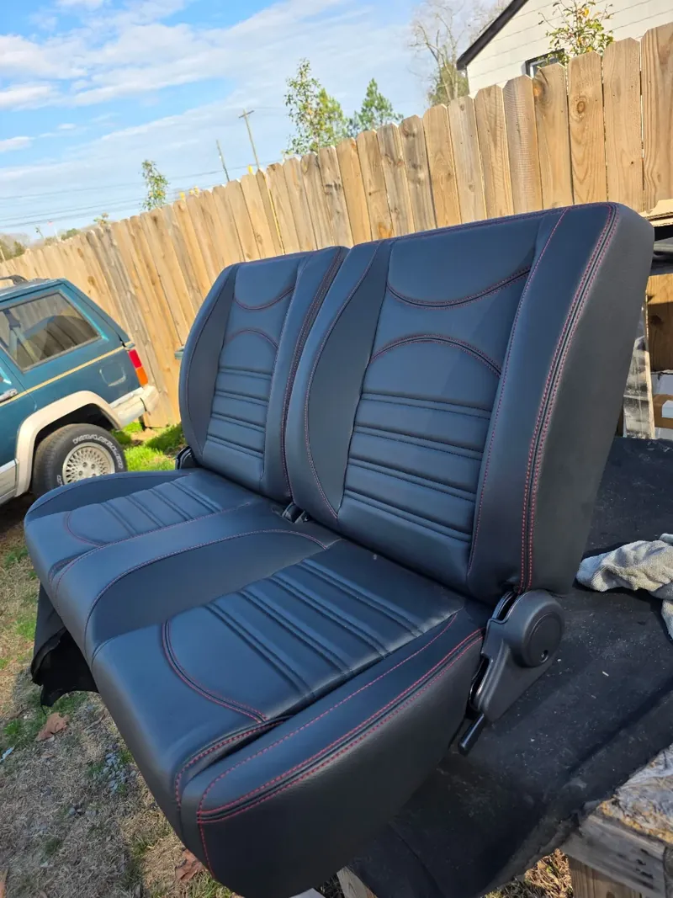
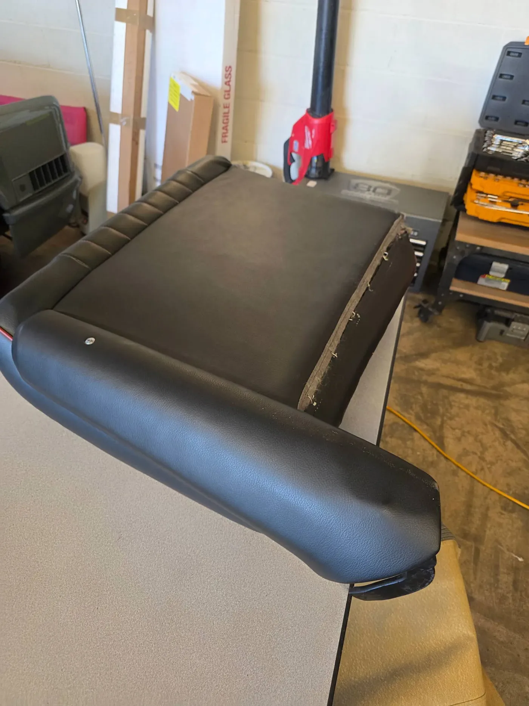
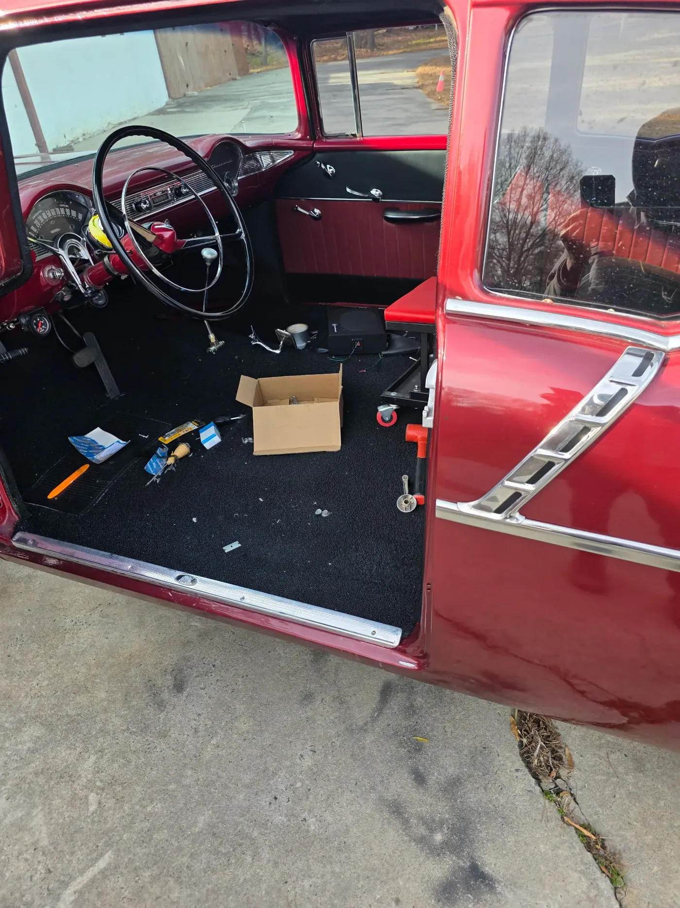
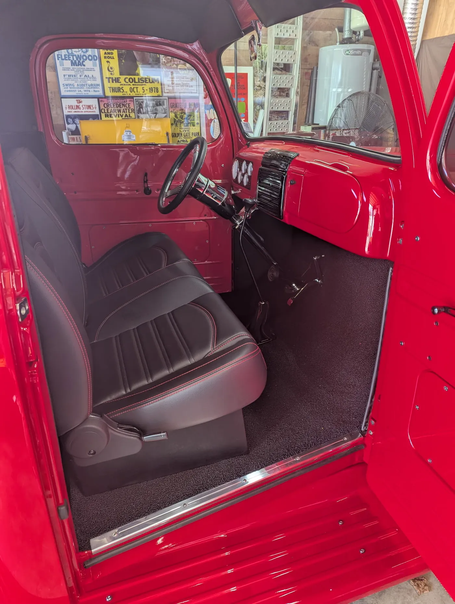
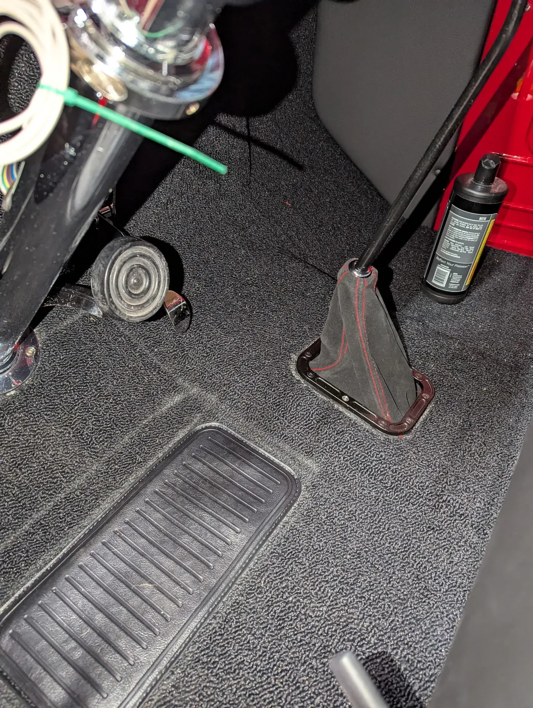
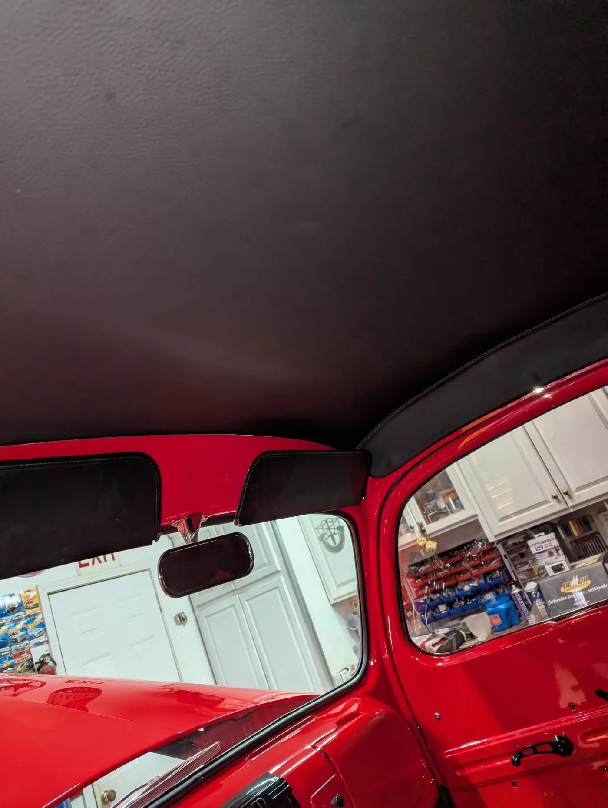
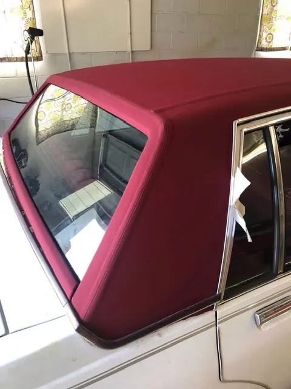

Automotive upholstery
Seats, headliners and interiors
From a single torn seat to a complete classic interior built to your spec. Daily drivers, trucks, and show cars.

Seats
- Torn and worn seat repair
- Foam replacement and reshaping
- Seat frame rebuild and structural repair
- Custom stitch and piping
Interior trim
- Headliner replacement
- Door panels, pleated or plain
- Carpet fitted and bound
- Shift boots and console trim
Full restoration
- Period-correct or upgraded builds
- Sound deadening under the carpet
- Materials specified with you first
02Recent work
Jobs out of this shop









03Frequently asked questions
Answers before you call
Do you repair a single seat, or only full interiors?
Either. Plenty of our work is one torn driver's seat or a sagging headliner. You do not need a full restoration to come see us.
How long does a seat repair take?
A straightforward seat repair is usually quick once materials are in. Bigger jobs depend on what we find under the cover — broken frames and collapsed foam add time. We will tell you what we find before we proceed.
Do you work on modern cars as well as classics?
Yes. Late-model seats, headliners and trim are routine work here alongside the restoration projects.
Can you match the original material?
Usually. For a classic we chase correct grain, stitch spacing and carpet weave. Where an exact original is no longer made, we will show you the closest options.
05Ready when you are
Ready to transform your interior?
Bring new life to your seats, tops, and trim with work built for comfort, durability, and long-term pride of ownership.
Free estimates · In-person quotes · Monroe, NC since 1989